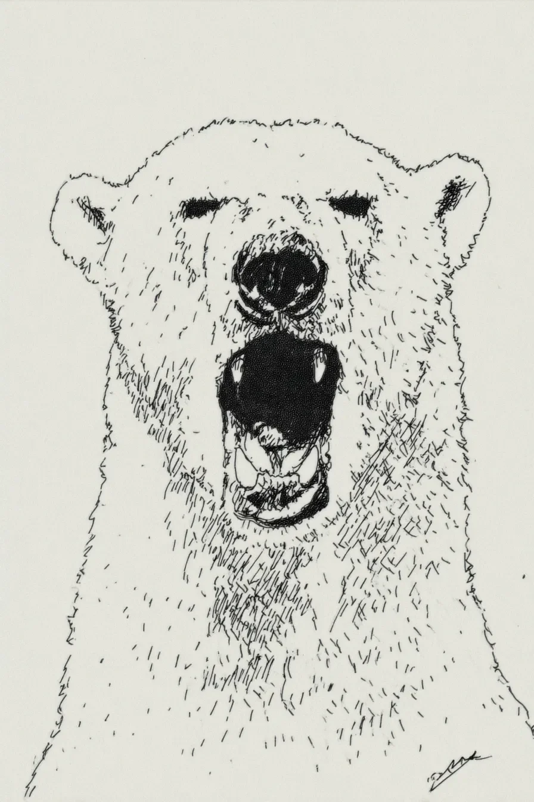

커다랗고 하얀 곰 한 마리가 가게 안에 서 있었다.
[A big, white bear stood in a store.]
곰은 더웠다. 아주, 아주 더웠다.
[He was hot. Very, very hot.]
그의 아름다운 하얀 털은 더 이상 하얗지 않았다. 나른하고 먼지 낀 잿빛이었다.
[His beautiful white fur was not white anymore. It was a sleepy, dusty grey.]
털은 잼처럼 끈적끈적했다.
[His fur felt sticky, like jam.]
“물개가 제 종이를 먹어버렸어요.” 곰이 말했다.
[”A seal ate my paper,” the bear said.]
그의 목소리는 경주를 시작하는 졸린 트럭처럼, 깊고 낮게 웅웅거렸다.
[His voice was a deep, low rumble, like a sleepy truck starting a race.]
카운터에 있던 남자는 웃지 않았다.
[The man at the counter did not smile.]
그의 이름표에는 개리라고 쓰여 있었다. 그의 셔츠는 아주 깨끗하고 빳빳했다.
[His name tag said GARY. His shirt was very clean and flat.]
“물개라.” 개리가 말했다. 그는 화면에서 눈을 떼지 않았다.
[”A seal,” Gary said. He did not look up from his screen.]
곰은 자신의 아이스박스를 향해 크고 검은 발톱 하나를 가리켰다.
[The bear pointed one big, black claw at his cold-box.]
그것은 파란색 상자였다. 물건을 차갑고 서리가 낄 정도로 만들어 줘야 했다.
[It was a blue box. It was supposed to make things cold and frosty.]
그러지 못했다.
[It did not.]
그저 조용하고 슬픈 노래를 흥얼거릴 뿐이었다. 반짝이는 바닥에 미지근한 물웅덩이만 조금 흘러나왔다.
[It just hummed a quiet, sad song. It leaked a small, lukewarm puddle on the shiny floor.]
“그 녀석이 종이가 물고기인 줄 알았어요.” 곰이 설명했다.
[”He thought the paper was a fish,” the bear explained.]
“실수였죠. 그리고 저는 불 피우느라 그 상자를 썼어요. 지금 제 얼음은 아주 젖어 있고요. 따뜻하게 있기가 힘드네요.”
[”It was an honest mistake. And I used the box to make a fire. My ice is very wet right now. It is hard to keep warm.”]
개리는 그저 고개를 저을 뿐이었다. 그의 얼굴은 매끈하고 하얀 달걀 같았다.
[Gary just shook his head. His face was like a smooth, white egg.]
“종이도 안 되고,” 개리가 말했다. “상자도 안 되고. 새 아이스박스도 안 됩니다.”
[”No paper,” Gary said. “No box. No new cold-box.”]
그는 손가락으로 작은 표지판을 톡톡 두드렸다.
[He tapped a little sign with his finger.]
표지판에는 이렇게 쓰여 있었다: 안 됨.
[The sign said: NO.]
곰은 뱃속에서 꾸르륵 소리가 나는 것을 느꼈다.
[The bear felt a grumble in his tummy.]
그는 털이 북슬북슬한 큰 발을 굴렀다. 쿵.
[He stamped his big, fuzzy foot. Thump.]
그는 아주 먼 길을 왔던 것이다.
[He had come a long, long way.]
그는 이 가게에 오려고, 꼬박 엿새 동안 크고 차가운 배를 타고 왔다.
[He came on a big, cold ship for six whole days, just to get to this store.]
그는 집이 그리웠다. 깨끗한 눈과 고요한 별들이 그리웠다.
[He missed his home. He missed the clean snow and the quiet stars.]
이 가게는 조용하지 않았다.
[This store was not quiet.]
조화, 식은 피자, 그리고 새 양말 냄새가 났다.
[It smelled like fake flowers, old pizza, and new socks.]
곰은 아주 큰 감정을 느꼈다.
[The bear felt a very big feeling.]
그 감정은 발가락에서부터 시작되었다.
[It started in his toes.]
그 감정은 곰의 커다랗고 잿빛 도는 하얀 가슴까지 웅웅거리며 올라왔다.
[It rumbled up his big, grey-white chest.]
곰은 입을 크게, 크게, 아주 크게 벌렸다.
[He opened his mouth wide, wide, wide.]
”크아아아아아아아아아앙!”
[”RRAAAAAAAAAUUUUUUGGGGHHH!”]
가게 안에서 내기에는 아주 큰 소리였다.
[It was a very loud sound for a store.]
램프나 푹신한 양탄자가 아니라, 산과 얼음에나 어울릴 법한 소리였다.
[It was a sound for mountains and ice, not for lamps and soft rugs.]
노란색 수건 더미가 휘청거렸다.
[A pile of yellow towels wobbled.]
작은 장난감 배 하나가 선반에서 떨어졌다. 팅.
[A little toy boat fell off a shelf. Plink.]
개리는 휘청거리지 않았다.
[Gary did not wobble.]
그는 기다렸다.
[He waited.]
그 아주, 아주 큰 소리가 멈췄다.
[The big, big sound stopped.]
개리가 다시 표지판을 톡톡 두드렸다. “안 됩니다.” 그가 말했다.
[Gary tapped the sign again. “No,” he said.]